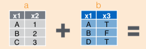
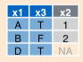
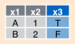
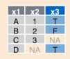

7 Tidying data
This section is concerned with common problems in data preparation, namely use cases commonly found in raw datasets that need to be addressed to turn messy data into tidy data. These would be operations that you would perform on data obtained as a csv file from a collaborator or data repository, or as the result of scraping data from webpages or other sources. We derive many of our ideas from the paper Tidy Data by Hadley Wickham. Associated with that paper we will use two very powerful R libraries tidyr and dplyr which are extremely useful in writing scripts for data cleaning, preparation and summarization. A basic design principle behind these libraries is trying to effectively and efficiently capture very common use cases and operations performed in data cleaning. The paper frames these use cases and operations which are them implemented in software.
7.1 Tidy Data
Here we assume we are working with a data model based on rectangular data structures where
- Each attribute (or variable) forms a column
- Each entity (or observation) forms a row
- Each type of entity (observational unit) forms a table
Here is an example of a tidy dataset:
library(nycflights13)
head(flights)## # A tibble: 6 x 19
## year month day dep_time sched_dep_time dep_delay arr_time
## <int> <int> <int> <int> <int> <dbl> <int>
## 1 2013 1 1 517 515 2 830
## 2 2013 1 1 533 529 4 850
## 3 2013 1 1 542 540 2 923
## 4 2013 1 1 544 545 -1 1004
## 5 2013 1 1 554 600 -6 812
## 6 2013 1 1 554 558 -4 740
## # ... with 12 more variables: sched_arr_time <int>, arr_delay <dbl>,
## # carrier <chr>, flight <int>, tailnum <chr>, origin <chr>, dest <chr>,
## # air_time <dbl>, distance <dbl>, hour <dbl>, minute <dbl>,
## # time_hour <dttm>it has one observation per row, a single variable per column. Notice only information about flights are included here (e.g., no airport information other than the name) in these observations.
7.2 Common problems in messy data
The set of common operations we will study are based on these common problems found in datasets. We will see each one in detail:
- Column headers are values, not variable names (gather)
- Multiple variables stored in one column (split)
- Variables stored in both rows and column (rotate)
- Multiple types of observational units are stored in the same table (normalize)
- Single observational unit stored in multiple tables (join)
We are using data from Hadley’s paper found in github. It’s included directory data:
data_dir <- "data"7.2.1 Headers as values
The first problem we’ll see is the case where a table header contains values. At this point we will introduce the dplyr package, which we’ll use extensively in this course. It is an extremely powerful and efficient way of manipulating tidy data. It will serve as the core of our data manipulation knowledge after this course.
dplyr defines a slightly different way of using data.frames. The tbl_df function converts a standard R data.frame into a tbl_df defined by dplyr. One nice thing it does, for example, is print tables in a much friendlier way.
library(tidyr)
library(dplyr)
library(readr)
pew <- read_csv(file.path(data_dir, "pew.csv"))## Parsed with column specification:
## cols(
## religion = col_character(),
## `<$10k` = col_integer(),
## `$10-20k` = col_integer(),
## `$20-30k` = col_integer(),
## `$30-40k` = col_integer(),
## `$40-50k` = col_integer(),
## `$50-75k` = col_integer(),
## `$75-100k` = col_integer(),
## `$100-150k` = col_integer(),
## `>150k` = col_integer(),
## `Don't know/refused` = col_integer()
## )pew## # A tibble: 18 x 11
## religion `<$10k` `$10-20k` `$20-30k`
## <chr> <int> <int> <int>
## 1 Agnostic 27 34 60
## 2 Atheist 12 27 37
## 3 Buddhist 27 21 30
## 4 Catholic 418 617 732
## 5 Don’t know/refused 15 14 15
## 6 Evangelical Prot 575 869 1064
## 7 Hindu 1 9 7
## 8 Historically Black Prot 228 244 236
## 9 Jehovah's Witness 20 27 24
## 10 Jewish 19 19 25
## 11 Mainline Prot 289 495 619
## 12 Mormon 29 40 48
## 13 Muslim 6 7 9
## 14 Orthodox 13 17 23
## 15 Other Christian 9 7 11
## 16 Other Faiths 20 33 40
## 17 Other World Religions 5 2 3
## 18 Unaffiliated 217 299 374
## # ... with 7 more variables: `$30-40k` <int>, `$40-50k` <int>,
## # `$50-75k` <int>, `$75-100k` <int>, `$100-150k` <int>, `>150k` <int>,
## # `Don't know/refused` <int>This table has the number of survey respondents of a specific religion that report their income within some range. A tidy version of this table would consider the variables of each observation to be religion, income, frequency where frequency has the number of respondents for each religion and income range. The function to use in the tidyr package is gather:
tidy_pew <- gather(pew, income, frequency, -religion)
tidy_pew## # A tibble: 180 x 3
## religion income frequency
## <chr> <chr> <int>
## 1 Agnostic <$10k 27
## 2 Atheist <$10k 12
## 3 Buddhist <$10k 27
## 4 Catholic <$10k 418
## 5 Don’t know/refused <$10k 15
## 6 Evangelical Prot <$10k 575
## 7 Hindu <$10k 1
## 8 Historically Black Prot <$10k 228
## 9 Jehovah's Witness <$10k 20
## 10 Jewish <$10k 19
## # ... with 170 more rowsThis says: gather all the columns from the pew (except religion) into key-value columns income and frequency. This table is much easier to use in other analyses.
Another example: this table has a row for each song appearing in the billboard top 100. It contains track information, and the date it entered the top 100. It then shows the rank in each of the next 76 weeks.
billboard <- read_csv(file.path(data_dir, "billboard.csv"))## Parsed with column specification:
## cols(
## .default = col_integer(),
## artist = col_character(),
## track = col_character(),
## time = col_time(format = ""),
## date.entered = col_date(format = ""),
## wk66 = col_character(),
## wk67 = col_character(),
## wk68 = col_character(),
## wk69 = col_character(),
## wk70 = col_character(),
## wk71 = col_character(),
## wk72 = col_character(),
## wk73 = col_character(),
## wk74 = col_character(),
## wk75 = col_character(),
## wk76 = col_character()
## )## See spec(...) for full column specifications.billboard## # A tibble: 317 x 81
## year artist track time date.entered
## <int> <chr> <chr> <time> <date>
## 1 2000 2 Pac Baby Don't Cry (Keep... 04:22:00 2000-02-26
## 2 2000 2Ge+her The Hardest Part Of ... 03:15:00 2000-09-02
## 3 2000 3 Doors Down Kryptonite 03:53:00 2000-04-08
## 4 2000 3 Doors Down Loser 04:24:00 2000-10-21
## 5 2000 504 Boyz Wobble Wobble 03:35:00 2000-04-15
## 6 2000 98^0 Give Me Just One Nig... 03:24:00 2000-08-19
## 7 2000 A*Teens Dancing Queen 03:44:00 2000-07-08
## 8 2000 Aaliyah I Don't Wanna 04:15:00 2000-01-29
## 9 2000 Aaliyah Try Again 04:03:00 2000-03-18
## 10 2000 Adams, Yolanda Open My Heart 05:30:00 2000-08-26
## # ... with 307 more rows, and 76 more variables: wk1 <int>, wk2 <int>,
## # wk3 <int>, wk4 <int>, wk5 <int>, wk6 <int>, wk7 <int>, wk8 <int>,
## # wk9 <int>, wk10 <int>, wk11 <int>, wk12 <int>, wk13 <int>, wk14 <int>,
## # wk15 <int>, wk16 <int>, wk17 <int>, wk18 <int>, wk19 <int>,
## # wk20 <int>, wk21 <int>, wk22 <int>, wk23 <int>, wk24 <int>,
## # wk25 <int>, wk26 <int>, wk27 <int>, wk28 <int>, wk29 <int>,
## # wk30 <int>, wk31 <int>, wk32 <int>, wk33 <int>, wk34 <int>,
## # wk35 <int>, wk36 <int>, wk37 <int>, wk38 <int>, wk39 <int>,
## # wk40 <int>, wk41 <int>, wk42 <int>, wk43 <int>, wk44 <int>,
## # wk45 <int>, wk46 <int>, wk47 <int>, wk48 <int>, wk49 <int>,
## # wk50 <int>, wk51 <int>, wk52 <int>, wk53 <int>, wk54 <int>,
## # wk55 <int>, wk56 <int>, wk57 <int>, wk58 <int>, wk59 <int>,
## # wk60 <int>, wk61 <int>, wk62 <int>, wk63 <int>, wk64 <int>,
## # wk65 <int>, wk66 <chr>, wk67 <chr>, wk68 <chr>, wk69 <chr>,
## # wk70 <chr>, wk71 <chr>, wk72 <chr>, wk73 <chr>, wk74 <chr>,
## # wk75 <chr>, wk76 <chr>Challenge: This dataset has values as column names. Which column names are values? How do we tidy this dataset?
7.2.2 Multiple variables in one column
The next problem we’ll see is the case when we see multiple variables in a single column. Consider the following dataset of tuberculosis cases:
tb <- read_csv(file.path(data_dir, "tb.csv"))## Parsed with column specification:
## cols(
## .default = col_integer(),
## iso2 = col_character()
## )## See spec(...) for full column specifications.tb## # A tibble: 5,769 x 22
## iso2 year m04 m514 m014 m1524 m2534 m3544 m4554 m5564 m65 mu
## <chr> <int> <int> <int> <int> <int> <int> <int> <int> <int> <int> <int>
## 1 AD 1989 NA NA NA NA NA NA NA NA NA NA
## 2 AD 1990 NA NA NA NA NA NA NA NA NA NA
## 3 AD 1991 NA NA NA NA NA NA NA NA NA NA
## 4 AD 1992 NA NA NA NA NA NA NA NA NA NA
## 5 AD 1993 NA NA NA NA NA NA NA NA NA NA
## 6 AD 1994 NA NA NA NA NA NA NA NA NA NA
## 7 AD 1996 NA NA 0 0 0 4 1 0 0 NA
## 8 AD 1997 NA NA 0 0 1 2 2 1 6 NA
## 9 AD 1998 NA NA 0 0 0 1 0 0 0 NA
## 10 AD 1999 NA NA 0 0 0 1 1 0 0 NA
## # ... with 5,759 more rows, and 10 more variables: f04 <int>, f514 <int>,
## # f014 <int>, f1524 <int>, f2534 <int>, f3544 <int>, f4554 <int>,
## # f5564 <int>, f65 <int>, fu <int>This table has a row for each year and strain of tuberculosis (given by the first two columns). The remaining columns state the number of cases for a given demographic. For example, m1524 corresponds to males between 15 and 24 years old, and f1524 are females age 15-24. As you can see each of these columns has two variables: sex and age.
Challenge: what else is untidy about this dataset?
So, we have to do two operations to tidy this table, first we need to use gather the tabulation columns into a demo and n columns (for demographic and number of cases):
tidy_tb <- gather(tb, demo, n, -iso2, -year)
tidy_tb## # A tibble: 115,380 x 4
## iso2 year demo n
## <chr> <int> <chr> <int>
## 1 AD 1989 m04 NA
## 2 AD 1990 m04 NA
## 3 AD 1991 m04 NA
## 4 AD 1992 m04 NA
## 5 AD 1993 m04 NA
## 6 AD 1994 m04 NA
## 7 AD 1996 m04 NA
## 8 AD 1997 m04 NA
## 9 AD 1998 m04 NA
## 10 AD 1999 m04 NA
## # ... with 115,370 more rowsNext, we need to separate the values in the demo column into two variables sex and age
tidy_tb <- separate(tidy_tb, demo, c("sex", "age"), sep=1)
tidy_tb## # A tibble: 115,380 x 5
## iso2 year sex age n
## * <chr> <int> <chr> <chr> <int>
## 1 AD 1989 m 04 NA
## 2 AD 1990 m 04 NA
## 3 AD 1991 m 04 NA
## 4 AD 1992 m 04 NA
## 5 AD 1993 m 04 NA
## 6 AD 1994 m 04 NA
## 7 AD 1996 m 04 NA
## 8 AD 1997 m 04 NA
## 9 AD 1998 m 04 NA
## 10 AD 1999 m 04 NA
## # ... with 115,370 more rowsThis calls the separate function on table tidy_db, separating the demo variable into variables sex and age by separating each value after the first character (that’s the sep argument).
We can put these two commands together in a pipeline:
tidy_tb <- tb %>%
gather(demo, n, -iso2, -year) %>%
separate(demo, c("sex", "age"), sep=1)
tidy_tb## # A tibble: 115,380 x 5
## iso2 year sex age n
## * <chr> <int> <chr> <chr> <int>
## 1 AD 1989 m 04 NA
## 2 AD 1990 m 04 NA
## 3 AD 1991 m 04 NA
## 4 AD 1992 m 04 NA
## 5 AD 1993 m 04 NA
## 6 AD 1994 m 04 NA
## 7 AD 1996 m 04 NA
## 8 AD 1997 m 04 NA
## 9 AD 1998 m 04 NA
## 10 AD 1999 m 04 NA
## # ... with 115,370 more rows7.2.3 Variables stored in both rows and columns
This is the messiest, commonly found type of data. Let’s take a look at an example, this is daily weather data from for one weather station in Mexico in 2010.
weather <- read_csv(file.path(data_dir, "weather.csv"))## Parsed with column specification:
## cols(
## .default = col_double(),
## id = col_character(),
## year = col_integer(),
## month = col_integer(),
## element = col_character(),
## d9 = col_character(),
## d12 = col_character(),
## d18 = col_character(),
## d19 = col_character(),
## d20 = col_character(),
## d21 = col_character(),
## d22 = col_character(),
## d24 = col_character()
## )## See spec(...) for full column specifications.weather## # A tibble: 22 x 35
## id year month element d1 d2 d3 d4 d5 d6 d7
## <chr> <int> <int> <chr> <dbl> <dbl> <dbl> <dbl> <dbl> <dbl> <dbl>
## 1 MX17004 2010 1 tmax NA NA NA NA NA NA NA
## 2 MX17004 2010 1 tmin NA NA NA NA NA NA NA
## 3 MX17004 2010 2 tmax NA 27.3 24.1 NA NA NA NA
## 4 MX17004 2010 2 tmin NA 14.4 14.4 NA NA NA NA
## 5 MX17004 2010 3 tmax NA NA NA NA 32.1 NA NA
## 6 MX17004 2010 3 tmin NA NA NA NA 14.2 NA NA
## 7 MX17004 2010 4 tmax NA NA NA NA NA NA NA
## 8 MX17004 2010 4 tmin NA NA NA NA NA NA NA
## 9 MX17004 2010 5 tmax NA NA NA NA NA NA NA
## 10 MX17004 2010 5 tmin NA NA NA NA NA NA NA
## # ... with 12 more rows, and 24 more variables: d8 <dbl>, d9 <chr>,
## # d10 <dbl>, d11 <dbl>, d12 <chr>, d13 <dbl>, d14 <dbl>, d15 <dbl>,
## # d16 <dbl>, d17 <dbl>, d18 <chr>, d19 <chr>, d20 <chr>, d21 <chr>,
## # d22 <chr>, d23 <dbl>, d24 <chr>, d25 <dbl>, d26 <dbl>, d27 <dbl>,
## # d28 <dbl>, d29 <dbl>, d30 <dbl>, d31 <dbl>So, we have two rows for each month, one with maximum daily temperature, one with minimum daily temperature, the columns starting with d correspond to the day in the where the measurements were made.
Challenge: How would a tidy version of this data look like?
weather %>%
gather(day, value, d1:d31, na.rm=TRUE) %>%
spread(element, value)## # A tibble: 33 x 6
## id year month day tmax tmin
## * <chr> <int> <int> <chr> <chr> <chr>
## 1 MX17004 2010 1 d30 27.8 14.5
## 2 MX17004 2010 2 d11 29.7 13.4
## 3 MX17004 2010 2 d2 27.3 14.4
## 4 MX17004 2010 2 d23 29.9 10.7
## 5 MX17004 2010 2 d3 24.1 14.4
## 6 MX17004 2010 3 d10 34.5 16.8
## 7 MX17004 2010 3 d16 31.1 17.6
## 8 MX17004 2010 3 d5 32.1 14.2
## 9 MX17004 2010 4 d27 36.3 16.7
## 10 MX17004 2010 5 d27 33.2 18.2
## # ... with 23 more rowsThe new function we’ve used here is spread. It does the inverse of gather it spreads columns element and value into separate columns.
7.2.4 Multiple types in one table
Remember that an important aspect of tidy data is that it contains exactly one kind of observation in a single table. Let’s see the billboard example again after the gather operation we did before:
tidy_billboard <- billboard %>%
gather(week, rank, wk1:wk76, na.rm=TRUE)
tidy_billboard## # A tibble: 5,307 x 7
## year artist track time date.entered
## * <int> <chr> <chr> <time> <date>
## 1 2000 2 Pac Baby Don't Cry (Keep... 04:22:00 2000-02-26
## 2 2000 2Ge+her The Hardest Part Of ... 03:15:00 2000-09-02
## 3 2000 3 Doors Down Kryptonite 03:53:00 2000-04-08
## 4 2000 3 Doors Down Loser 04:24:00 2000-10-21
## 5 2000 504 Boyz Wobble Wobble 03:35:00 2000-04-15
## 6 2000 98^0 Give Me Just One Nig... 03:24:00 2000-08-19
## 7 2000 A*Teens Dancing Queen 03:44:00 2000-07-08
## 8 2000 Aaliyah I Don't Wanna 04:15:00 2000-01-29
## 9 2000 Aaliyah Try Again 04:03:00 2000-03-18
## 10 2000 Adams, Yolanda Open My Heart 05:30:00 2000-08-26
## # ... with 5,297 more rows, and 2 more variables: week <chr>, rank <chr>Let’s sort this table by track to see a problem with this table:
tidy_billboard <- tidy_billboard %>%
arrange(track)
tidy_billboard## # A tibble: 5,307 x 7
## year artist track time date.entered week rank
## <int> <chr> <chr> <time> <date> <chr> <chr>
## 1 2000 Nelly (Hot S**t) Country G... 04:17:00 2000-04-29 wk1 100
## 2 2000 Nelly (Hot S**t) Country G... 04:17:00 2000-04-29 wk2 99
## 3 2000 Nelly (Hot S**t) Country G... 04:17:00 2000-04-29 wk3 96
## 4 2000 Nelly (Hot S**t) Country G... 04:17:00 2000-04-29 wk4 76
## 5 2000 Nelly (Hot S**t) Country G... 04:17:00 2000-04-29 wk5 55
## 6 2000 Nelly (Hot S**t) Country G... 04:17:00 2000-04-29 wk6 37
## 7 2000 Nelly (Hot S**t) Country G... 04:17:00 2000-04-29 wk7 24
## 8 2000 Nelly (Hot S**t) Country G... 04:17:00 2000-04-29 wk8 24
## 9 2000 Nelly (Hot S**t) Country G... 04:17:00 2000-04-29 wk9 30
## 10 2000 Nelly (Hot S**t) Country G... 04:17:00 2000-04-29 wk10 36
## # ... with 5,297 more rowsWe have a lot of repeated information in many of these rows (the artist, track name, year, title and date entered). The problem is that this table contains information about both tracks and rank in billboard. That’s two different kinds of observations that should belong in two different tables in a tidy dataset.
Let’s make a song table that only includes information about songs:
song <- tidy_billboard %>%
select(artist, track, year, time, date.entered) %>%
unique()
song## # A tibble: 317 x 5
## artist track year time date.entered
## <chr> <chr> <int> <time> <date>
## 1 Nelly (Hot S**t) Country G... 2000 04:17:00 2000-04-29
## 2 Nu Flavor 3 Little Words 2000 03:54:00 2000-06-03
## 3 Jean, Wyclef 911 2000 04:00:00 2000-10-07
## 4 Brock, Chad A Country Boy Can Su... 2000 03:54:00 2000-01-01
## 5 Clark, Terri A Little Gasoline 2000 03:07:00 2000-12-16
## 6 Son By Four A Puro Dolor (Purest... 2000 03:30:00 2000-04-08
## 7 Carter, Aaron Aaron's Party (Come ... 2000 03:23:00 2000-08-26
## 8 Nine Days Absolutely (Story Of... 2000 03:09:00 2000-05-06
## 9 De La Soul All Good? 2000 05:02:00 2000-12-23
## 10 Blink-182 All The Small Things 2000 02:52:00 1999-12-04
## # ... with 307 more rowsThe unique function removes any duplicate rows in a table. That’s how we have a single row for each song.
Next, we would like to remove all the song information from the rank table. But we need to do it in a way that still remembers which song each ranking observation corresponds to. To do that, let’s first give each song an identifier that we can use to link songs and rankings. So, we can produce the final version of our song table like this:
song <- tidy_billboard %>%
select(artist, track, year, time, date.entered) %>%
unique() %>%
mutate(song_id = row_number())
song## # A tibble: 317 x 6
## artist track year time date.entered
## <chr> <chr> <int> <time> <date>
## 1 Nelly (Hot S**t) Country G... 2000 04:17:00 2000-04-29
## 2 Nu Flavor 3 Little Words 2000 03:54:00 2000-06-03
## 3 Jean, Wyclef 911 2000 04:00:00 2000-10-07
## 4 Brock, Chad A Country Boy Can Su... 2000 03:54:00 2000-01-01
## 5 Clark, Terri A Little Gasoline 2000 03:07:00 2000-12-16
## 6 Son By Four A Puro Dolor (Purest... 2000 03:30:00 2000-04-08
## 7 Carter, Aaron Aaron's Party (Come ... 2000 03:23:00 2000-08-26
## 8 Nine Days Absolutely (Story Of... 2000 03:09:00 2000-05-06
## 9 De La Soul All Good? 2000 05:02:00 2000-12-23
## 10 Blink-182 All The Small Things 2000 02:52:00 1999-12-04
## # ... with 307 more rows, and 1 more variables: song_id <int>The mutate function adds a new column to the table, in this case with column name song_id and value the row number the song appears in the table (from the row_number column).
Now we can make a rank table, we combine the tidy billboard table with our new song table using a join (we’ll learn all about joins later). It checks the values on each row of the billboard table and looks for rows in the song table that have the exact same values, and makes a new row that combines the information from both tables.
tidy_billboard %>%
left_join(song, c("artist", "year", "track", "time", "date.entered"))## # A tibble: 5,307 x 8
## year artist track time date.entered week rank
## <int> <chr> <chr> <time> <date> <chr> <chr>
## 1 2000 Nelly (Hot S**t) Country G... 04:17:00 2000-04-29 wk1 100
## 2 2000 Nelly (Hot S**t) Country G... 04:17:00 2000-04-29 wk2 99
## 3 2000 Nelly (Hot S**t) Country G... 04:17:00 2000-04-29 wk3 96
## 4 2000 Nelly (Hot S**t) Country G... 04:17:00 2000-04-29 wk4 76
## 5 2000 Nelly (Hot S**t) Country G... 04:17:00 2000-04-29 wk5 55
## 6 2000 Nelly (Hot S**t) Country G... 04:17:00 2000-04-29 wk6 37
## 7 2000 Nelly (Hot S**t) Country G... 04:17:00 2000-04-29 wk7 24
## 8 2000 Nelly (Hot S**t) Country G... 04:17:00 2000-04-29 wk8 24
## 9 2000 Nelly (Hot S**t) Country G... 04:17:00 2000-04-29 wk9 30
## 10 2000 Nelly (Hot S**t) Country G... 04:17:00 2000-04-29 wk10 36
## # ... with 5,297 more rows, and 1 more variables: song_id <int>That adds the song_id variable to the tidy_billboard table. So now we can remove the song information and only keep ranking information and the song_id.
rank <- tidy_billboard %>%
left_join(song, c("artist", "year", "track", "time", "date.entered")) %>%
select(song_id, week, rank)
rank## # A tibble: 5,307 x 3
## song_id week rank
## <int> <chr> <chr>
## 1 1 wk1 100
## 2 1 wk2 99
## 3 1 wk3 96
## 4 1 wk4 76
## 5 1 wk5 55
## 6 1 wk6 37
## 7 1 wk7 24
## 8 1 wk8 24
## 9 1 wk9 30
## 10 1 wk10 36
## # ... with 5,297 more rowsChallenge: Let’s do a little better job at tidying the billboard dataset:
- When using
gatherto make theweekandrankcolumns, remove any weeks where the song does not appear in the top 100. This is coded as missing (NA). See thena.rmargument togather.
- Make
weeka numeric variable (i.e., removewk). See what theextract_numericfunction does.
- Instead of
date.enteredadd adatecolumn that states the actual date of each ranking. See how R deals with dates?Dateand how you can turn a string into aDateusingas.Date.
- Sort the resulting table by date and rank.
- Make new
songandranktables.songwill now not have thedate.enteredcolumn, andrankwill have the newdatecolumn you have just created.
7.3 Data wrangling with dplyr
In previous lectures we discussed the data.frame to introduced the structure we usually see in a dataset before we start analysis:
- Each attribute/variable forms a column
- Each entity/(observational unit) forms a row
- Each type of entity/(observation unit) forms a table
Although we did not explicitly mentioned number 3, in more complex datasets we want to make sure we divide different entity types into their respective table. We will discuss this in more detail when we see data models (in the database sense) later on. We will refer to data organized in this fashion as tidy data.
In this section we introduce operations and manipulations that commonly arise in analyses. We center our discussion around the idea that we are operating over tidy data, and we want to ensure that the operations we apply also generate tidy data as a result.
7.3.1 dplyr
We will use the dplyr package to introduce these oprations. I think it is one of the most beautiful tools created for data analysis. It clearly defines and efficiently implements most common data manipulation operations (verbs) one comes across in data analysis. It is built around tidy data principles. It also presents uniform treatment of multiple kinds of data sources (in memory files, partially loaded files, databases). It works best when used in conjuction with the non-standard pipe operator (%>%) first introduced by the magrittr package.
A complete introduction to dplyr is found here: http://cran.rstudio.com/web/packages/dplyr/vignettes/introduction.html
We will use a dataset of inbound and outbound flights to New York City as an example:
library(nycflights13)
data(flights)7.4 Single-table manipulation
We will first look at operations that work over a single table at a time.
Single table verbs:
filter()andslice(): subset observations (entities)
arrange(): sort observations (entities)
select()andrename(): subset variables (attributes)
distinct(): make entities unique
mutate()andtransmutate(): add a new variable (attribute)
summarize(): compute a summary statistics for one or more variables
sample_n()andsample_frac(): sample observations from a data table
7.4.1 Subsetting Observations
The first fundamental operation we learned about early in this course is subsetting, or filtering, observations (entities, rows) in a dataset. Recall that we could subset by a set of indices (say, all even rows, this is used when splitting datasets to train and test statistical models). Much more useful is the ability to filter observations based on attribute values.

# include only flights on United Airlines
flights %>% filter(carrier == "UA")
# select even samples, note function `n` defined by dplyr
flights %>% slice(seq(1, n(), by=2))7.4.2 Subsetting Variables
Frequently, we may want to restrict a data analysis to a subset of variables (attributes, columns) to improve efficiency or interpretability.

# select only month carrier and origin variables
flights %>% select(month, carrier, origin)On large, complex, datasets the ability to perform this selection based on properties of column/attribute names is very powerful. For instance, in the billboard dataset we saw in a previous unit, we can select columns using partial string matching:
billboard %>%
select(starts_with("wk"))7.4.3 Creating New Variables
One of the most common operations in data analysis is to create new variables (attributes), based on other existing attributes.
These manipulations are used for transformations of existing single variables, for example, squaring a given varaible (x -> x^2), to make visualization or other downstream analysis more effective. In other cases, we may want to compute functions of existing variables to improve analysis or interpretation of a dataset.
Here is an example creating a new variable as a function of two existing variables
# add new variable with total delay
flights %>% mutate(delay=dep_delay + arr_delay)7.4.4 Summarizing Data
Much of statistical analysis, modeling and visualization is based on computing summaries (refered to as summary statistics) for variables (attributes), or other data features, of datasets. The summarize operation summarizes one variable (columns) over multiple observations (rowss) into a single value.

# compute mean total delay across all flights
flights %>%
mutate(delay = dep_delay + arr_delay) %>%
summarize(mean_delay = mean(delay, na.rm=TRUE),
min_delay = min(delay, na.rm=TRUE),
max_delay = max(delay, na.rm=TRUE))7.4.5 Grouping Data
Aggregation and summarization also go hand in hand with data grouping, where aggregates, or even variable transformations are performed conditioned on other variables. The notion of conditioning is fundamental and we will see it very frequently through the course. It is the basis of statistical analysis and Machine Learning models for regression and prediction, and it is essential in understanding the design of effective visualizations.

So the goal is to group observations (rows) with the same value of one or more variables (columns). In the dplyr implementation, the group_by function in essence annotates the rows of a data table as belonging to a specific group. When summarize is the applied onto this annotated data table, summaries are computed for each group, rather than the whole table.
# compute mean total delay per carrier
flights %>%
mutate(delay = dep_delay + arr_delay) %>%
group_by(carrier) %>%
summarize(delay=mean(delay, na.rm=TRUE))7.5 Two-table manipulation
We saw above manipulations defined over single tables. In this section we look at efficient methods to combine data from multiple tables. The fundamental operation here is the join, which is a workhorse of database system design and impementation. The join operation combines rows from two tables to create a new single table, based on matching criteria specified over attributes of each of the two tables.
Consider the example of joining the flights and airlines table:
head(flights)## # A tibble: 6 x 19
## year month day dep_time sched_dep_time dep_delay arr_time
## <int> <int> <int> <int> <int> <dbl> <int>
## 1 2013 1 1 517 515 2 830
## 2 2013 1 1 533 529 4 850
## 3 2013 1 1 542 540 2 923
## 4 2013 1 1 544 545 -1 1004
## 5 2013 1 1 554 600 -6 812
## 6 2013 1 1 554 558 -4 740
## # ... with 12 more variables: sched_arr_time <int>, arr_delay <dbl>,
## # carrier <chr>, flight <int>, tailnum <chr>, origin <chr>, dest <chr>,
## # air_time <dbl>, distance <dbl>, hour <dbl>, minute <dbl>,
## # time_hour <dttm>head(airlines)## # A tibble: 6 x 2
## carrier name
## <chr> <chr>
## 1 9E Endeavor Air Inc.
## 2 AA American Airlines Inc.
## 3 AS Alaska Airlines Inc.
## 4 B6 JetBlue Airways
## 5 DL Delta Air Lines Inc.
## 6 EV ExpressJet Airlines Inc.Here, we want to add airline information to each flight. We can do so by joining the attributes of the respective airline from the airlines table with the flights table based on the values of attributes flights$carrier and airlines$carrier. Specifically, every row of flights with a specific value for flights$carrier, is joined with the the corresponding row in airlines with the same value for airlines$carrier. We will see four different ways of performing this operation that differ on how non-matching observations are handled.
7.5.1 Left Join
In this case, all observations on left operand (LHS) are retained:
 
flights %>%
left_join(airlines, by="carrier")RHS variables for LHS observations with no matching RHS observations are coded as NA.
7.5.1.1 Right Join
All observations on right operand (RHS) are retained:

flights %>%
right_join(airlines, by="carrier")LHS variables for RHS observations with no matching LHS observations are coded as NA.
7.5.1.2 Inner Join
Only observations matching on both tables are retained

flights %>%
inner_join(airlines, by="carrier")7.5.1.3 Full Join
All observations are retained, regardless of matching condition

flights %>%
full_join(airlines, by="carrier")All values coded as NA for non-matching observations as appropriate.
7.5.2 Join conditions
All join operations are based on a matching condition:
flights %>%
left_join(airlines, by="carrier")specifies to join observations where flights$carrier equals airlines$carrier.
In this case, where no conditions are specified using the by argument:
flights %>%
left_join(airlines)a natural join is perfomed. In this case all variables with the same name in both tables are used in join condition.
You can also specify join conditions on arbitrary attributes using the by argument.
flights %>%
left_join(airlines, by=c("carrier" = "name"))7.5.3 Filtering Joins
We’ve just seen mutating joins that create new tables. Filtering joins use join conditions to filter a specific table.
flights %>% anti_join(airlines, by="carrier")## # A tibble: 0 x 19
## # ... with 19 variables: year <int>, month <int>, day <int>,
## # dep_time <int>, sched_dep_time <int>, dep_delay <dbl>, arr_time <int>,
## # sched_arr_time <int>, arr_delay <dbl>, carrier <chr>, flight <int>,
## # tailnum <chr>, origin <chr>, dest <chr>, air_time <dbl>,
## # distance <dbl>, hour <dbl>, minute <dbl>, time_hour <dttm>Filters the flights table to only include flights from airlines that are not included in the airlines table.
7.6 Final note on dplyr
- Very efficient implementation of these operations.
- More info: http://cran.rstudio.com/web/packages/dplyr/vignettes/introduction.html
- Cheatsheet: http://www.rstudio.com/wp-content/uploads/2015/02/data-wrangling-cheatsheet.pdf
7.7 Exercise
- Clean up the Diego Luna ratings data scraped in the previous unit.
- Only keep movies that have a rating and that Diego Luna acts in
- Convert the rating to a numeric variable (use the
str_replaceandtype_convertfunctions)
- Clean up the movie budget data scraped in the previous unit.
- Remove rows with missing values
- Make the budget and revenue columns numeric and expressed in millions
Join the Diego Luna ratings and movie budget data using the movie title as the join variable
Think and implement ways of making the integration of these two datasets more robust.